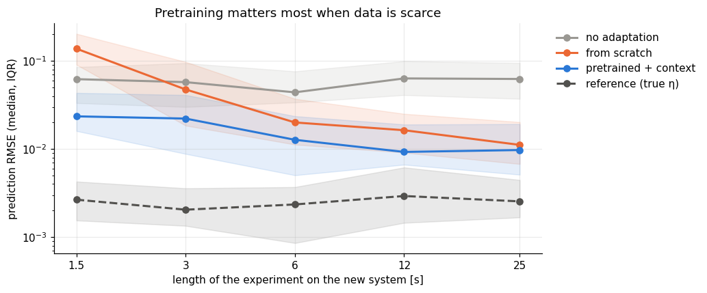

import numpy as np
import matplotlib.pyplot as plt
import dynutils
from dynutils import sample_system, simulate, multisine, predict, fit_from_scratch, adapt, rmse
dynutils.set_style()
rng = np.random.default_rng(dynutils.SEED)
COLOR = dynutils.COLOR
family, train_systems, train_data, train_fits = dynutils.build_family(rng)budgets = [15, 30, 60, 120, 250] # samples; x 0.1 s
methods = ["none", "scratch", "context", "reference"]
budget_err = {m: np.zeros((len(budgets), 40)) for m in methods}
for i, T in enumerate(budgets):
for n in range(40):
s = sample_system(rng); u = multisine(T, rng); _, y = simulate(s, u, rng)
u_val = multisine(300, rng, n=6); q_val, _ = simulate(s, u_val, rng, noise=False)
etas = dict(none=family.mean, scratch=fit_from_scratch(y, u),
context=family.decode(adapt(family, y, u)[0]), reference=s["eta"])
for m in methods:
budget_err[m][i, n] = rmse(predict(etas[m], u_val), q_val)
labels = dict(none="no adaptation", scratch="from scratch", context="pretrained + context",
reference="reference (true η)")
seconds = dynutils.DT * np.array(budgets)
fig, ax = plt.subplots(figsize=(9.5, 4))
for m in methods:
med = np.median(budget_err[m], axis=1)
lo, hi = np.percentile(budget_err[m], [25, 75], axis=1)
ls = "--" if m == "reference" else "-"
ax.plot(seconds, med, ls, marker="o", color=COLOR[m], label=labels[m])
ax.fill_between(seconds, lo, hi, color=COLOR[m], alpha=0.12)
ax.set(xscale="log", yscale="log", xlabel="length of the experiment on the new system [s]",
ylabel="prediction RMSE (median, IQR)", xticks=seconds, xticklabels=[f"{x:g}" for x in seconds],
title="Pretraining matters most when data is scarce")
ax.xaxis.set_minor_locator(plt.NullLocator())
ax.legend(loc="upper left", bbox_to_anchor=(1.01, 1)); plt.tight_layout(); plt.show()
for i, T in enumerate(budgets):
ratio = np.median(budget_err["scratch"][i]) / np.median(budget_err["context"][i])
print(f"{T*dynutils.DT:5.1f} s: from-scratch error is {ratio:4.1f}x the pretrained error")
1.5 s: from-scratch error is 5.9x the pretrained error 3.0 s: from-scratch error is 2.1x the pretrained error 6.0 s: from-scratch error is 1.6x the pretrained error 12.0 s: from-scratch error is 1.8x the pretrained error 25.0 s: from-scratch error is 1.1x the pretrained error
The pattern is the central message of few-shot learning:
- Scarce data (a few seconds): from scratch is worse than doing nothing, because it overfits. The pretrained model is already useful.
- More data: from scratch improves steadily and the gap narrows. Pretraining buys data efficiency, not a better final model.
- All learned models stay above the reference. The remaining error comes from the imperfect pretraining (e.g. the poorly identified \alpha) and the rank-2 restriction. Neither can be fixed by collecting more data on the new system; only a better model class can.
So far every experiment has been random. Can we do better by choosing the experiment?
Exercises
Exercise 1: Where exactly does from-scratch catch up?
Using the budget_err arrays above, find the smallest budget at which the median from-scratch error
drops below the median pretrained-context error (if it does within the budgets tried).
Solution
med_scratch = np.median(budget_err["scratch"], axis=1)
med_context = np.median(budget_err["context"], axis=1)
crossing = [T for T, s, c in zip(budgets, med_scratch, med_context) if s < c]
crossing[:1] if crossing else "no crossing within the tried budgets"
Within the budgets tried (up to 25 s) from scratch does not fully close the gap on the median, even though its rate of improvement is faster; the two curves are converging but the crossing, if any, lies beyond 25 s.
Exercise 2: Restricting the family to one dimension
Refit family with rank=1 (reuse train_fits/train_data from chapter 03's recipe via
dynutils.build_family(rng, rank=1) on a fresh rng) and repeat the comparison at the shortest
budget only. How much worse does a one-number context do compared with the two-number one?
Solution
rank1_family, *_ = dynutils.build_family(np.random.default_rng(dynutils.SEED), rank=1)
T = budgets[0]
errs = []
for n in range(40):
s = sample_system(rng); u = multisine(T, rng); _, y = simulate(s, u, rng)
u_val = multisine(300, rng, n=6); q_val, _ = simulate(s, u_val, rng, noise=False)
z1, _, _ = adapt(rank1_family, y, u)
errs.append(rmse(predict(rank1_family.decode(z1), u_val), q_val))
np.median(errs), np.median(budget_err["context"][0])
A single number cannot represent the second family direction at all, so systems whose true context lies mostly along z_2 are systematically mispredicted; the one-dimensional context is noticeably worse on the shortest budget, even though it is more certain about the number it does estimate.